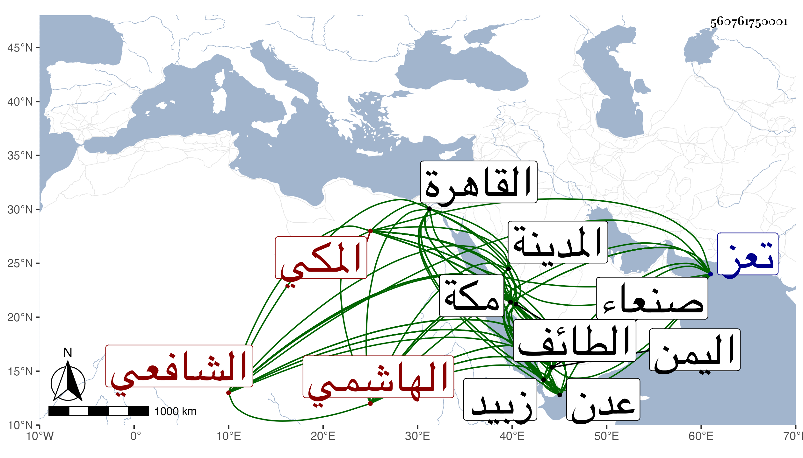

0902Sakhawi.DawLamic.ITO20230111-ara1.EIS1600.560761750001
Biography ID: 560761750001
1004
يحيى بن عمر بن محمد بن محمد بن أبي الخير محمد بن محمد بن عبد الله ابن فهد حيي الدين أبو زكريا بن النجم أبي القسم الهاشمي المكي الشافعي الماضي شقيقه عبد العزيز وأبوهما وجدهما ويعرف كسلفه بابن فهد . ولد في ليلة الأحد ثالث عشرى ربيع الآخر سنة ثمان وأربعين وثمانمائة بمكة ونشأ بها فحفظ القرآن والشاطبية وأربعي النووي وألفية ابن ملك ومن المنهاج إلى الرجعة أو الظهار وعرض على جماعة كجده والشوائطي بل قرأها كلها عليهما وآخرين لكن على العادة ، واعتنى به أبوه فأحضره وأسمعه كثيرا من شيوخ بلده والقادمين إليها واستجاز له جماعة وممن سمع عليه أبو الفتح المراغي والزين الأميوطي والبرهان الزمزمي وأكثر ذلك معي في الحجة الأولى بل سمع علي كثيرا من تصانيفي وغيرها في المجاورة الثانية وحضر مجالس إملائي ، وزار المدينة النبوية والطائف وبجيلة وأكثرها أزيد من مرة وكذا دخل كلا من القاهرة واليمن مرتين وصل في أحدهما إلى زبيد ثم إلى تعز ثم إلى صنعاء وفي الثانية إلى عدن وسمع في جلها على جماعة وفي زبيد على الفقيه عمر الفتي شيئا من مصنفاته وغيرها ورغب في السفر لراحة خاطره وتفقه بالنور الفاكهي وقرأ عليه في العربية والفرائض وكان بصيرا بها وكذا حضر مجالس البرهاني بن ظهيرة وأخيه الفخري وقرأ على السيد السمهودي في المناسك وظنا في الفرائض وفي النحو أيضا على أبي الوقت المرشدي وفي الميقات على النور الزمزمي وأبي الفضل بن الإمام الشامي وكان بصيرا بشيء منها ، وكان فاضلا ذكيا فهامة ساكنا عاقلا صالحا نيرا سيما الخير عليه لائحة راغبا في الصلاة والطواف والصيام والبر مع التقلل جدا كارها مع ذلك لتعاطي الزكوات والصدقات الواصلة لمكة بل تعفف أخيرا عنها فلم يقبلها فكان أبوه أو أخوه يأخذها دفعا لمن لعله لا يعجبه ذلك خبيرا بالشعر له فيه ذوق حسن بحيث انتخب من دواوينه شيئا كثيرا وجمع مجاميع في ذلك بل جمع فوائد كثيرة من النكت والغرائب واختصر الأمثال للميداني وعمل في الأوائل كتابا مجردا سماه الدلائل إلى معرفة الأوائل ، وفضائله كثيرة ومحاسنه جمة كل ذلك مع التؤدة وعدم التكثر بما اشتمل عليه وخبرته التامة بكثير من الأمور وكان لأبيه وأخيه وأحبابه به جمال وأنس ، ولم يزل في ترق من الأوصاف الشريفة حتى مات بمكة بعد توعك نحو نصف شهر في ليلة الاثنين خامس عشرى ذي القعدة سنة خمس وثمانين وصلي عليه من الغد بعد الصبح عند باب الكعبة ودفن بالمعلاة في قبر مبتكر عند قبور أسلافه ووقع وهو على دكة المغتسل في الليل مطر عم بدنه واستمر المطر إلى وقت الصلاة عليه بدون غيم ونحوه فاستبشر والده بعموم الرحمة وتأسف أهل مكة وكل من يعرفه على فقده وشيعه خلق لا يحصون وكثر الثناء عليه وكان قريب الأجل من أبيه كما أن ابنته التي لم يترك غيرها مع أمه وأخيه قريبة الأجل منه رحمه الله وعوضه الجنة .
